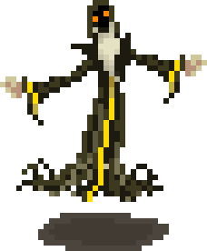
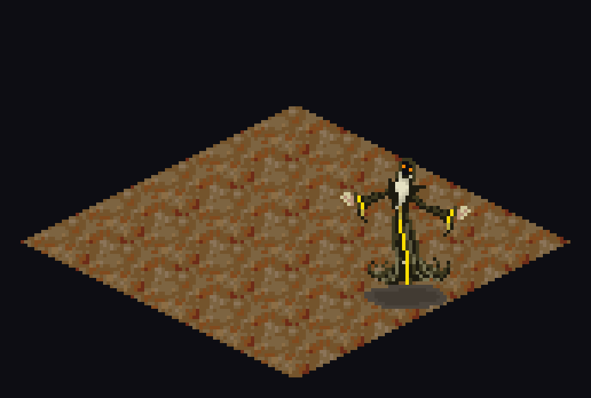

Era of Eidolon · Shirard’s Forge


It swings 3 times a turn, so each blow is small. Armour comes off every one of them, and earns its price here.
There is nowhere beside it that is safe.
Found in The Forge.